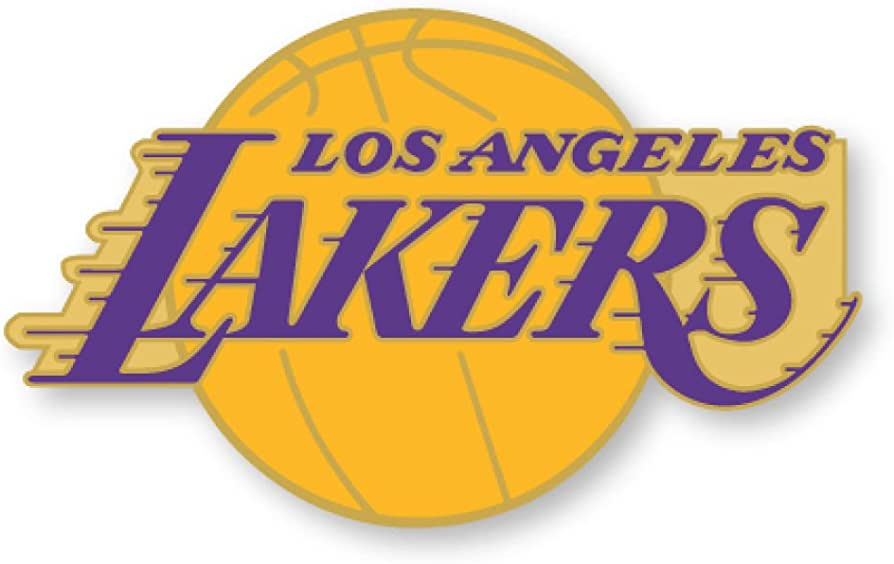
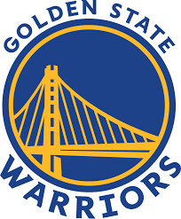
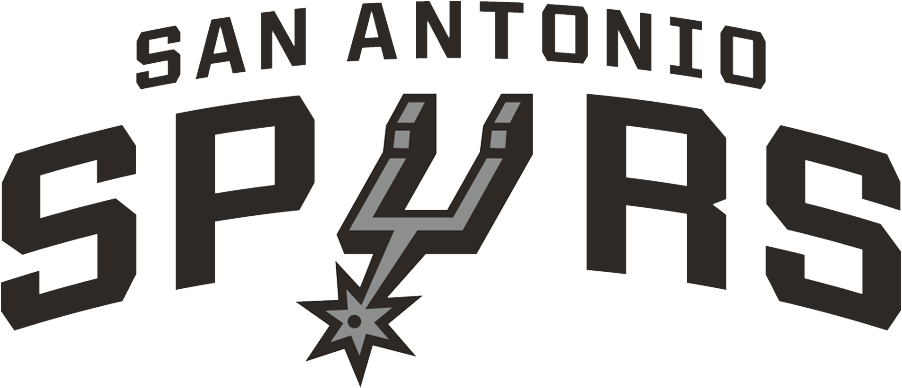
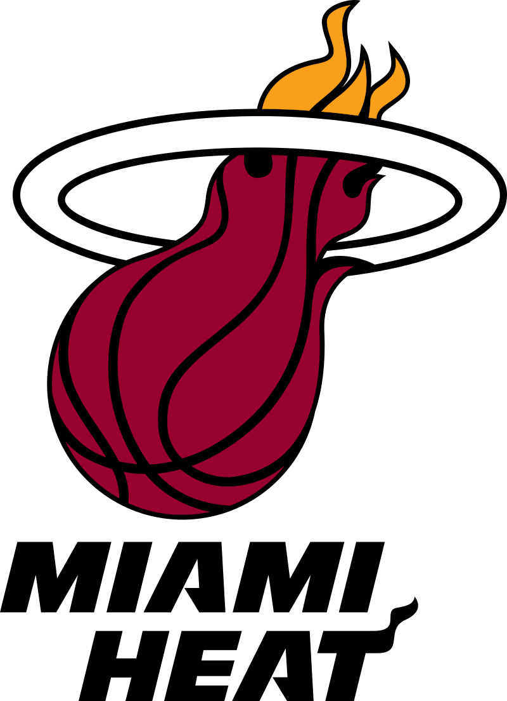
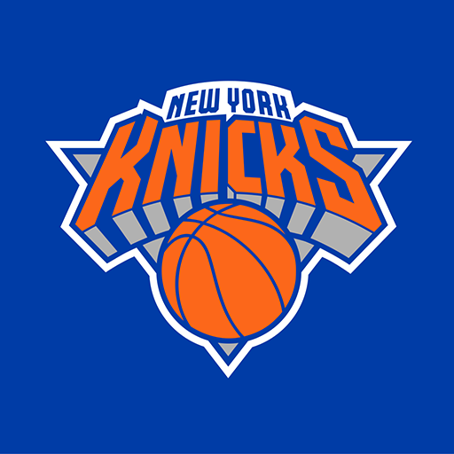
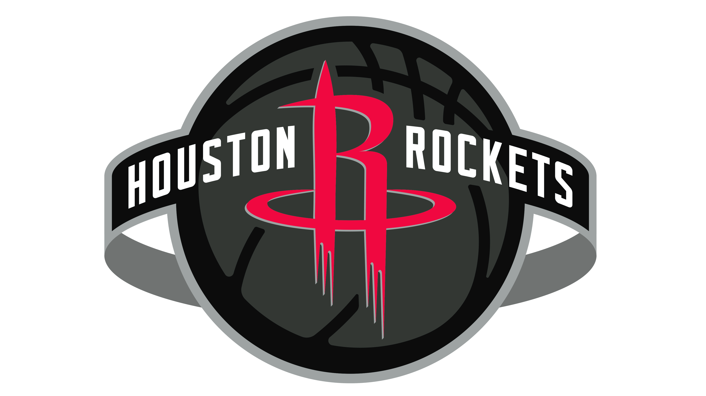

Clic para regresar al menu de equipos
Descripcion de los equipos
Clic para ir al apartado de Los angeles lakers
Clic para ir al apartado de los Boston Celtics
Clic para ir al apartado de los Golden State Warriors
Clic para ir al apartado de Chicago Bulls
Clic para ir al apartado de San Antonio Spur
Clic para ir al apartado de Philadelphia 76ers
Clic para ir al apartado de Los Detroit Pistons
Clic para ir al apartado de Miami Heat
Clic para ir al apartado de los New York Knicks
Clic para ir al apartado de Los Houston Rockets
Los Angeles Lakers

Los Angeles Lakers son un equipo profesional de baloncesto de los Estados Unidos con sede en Los Ángeles, California. Compiten en la División Pacífico de la Conferencia Oeste de la National Basketball Association (NBA) y disputan sus partidos como locales en el Crypto.com Arena, ubicado en el downtown de la ciudad. Campeones de la NBA en 17 ocasiones, están empatados en el palmarés de la NBA, con los Boston Celtics. Poseen el récord de más partidos consecutivos ganados (33) en la historia del deporte profesional estadounidense, llegando a estar imbatidos desde el 5 de noviembre de 1971 hasta el 7 de enero de 1972, fecha en la que perdieron ante Milwaukee Bucks. Los Lakers solo han faltado en los playoffs diez veces en su historia. 24 jugadores miembros del Basketball Hall of Fame han jugado en los Lakers, mientras otros cinco han entrenado al equipo. Cuatro lakers —Kareem Abdul-Jabbar, Magic Johnson, Shaquille O'Neal y Kobe Bryant— han conseguido ganar el MVP de la Temporada de la NBA, para un total de 11 galardones.
Boston Celtics

Los Boston Celtics (en idioma español, Celtas de Boston) son un equipo profesional de baloncesto de los Estados Unidos con sede en Boston, Massachusetts. Compiten en la División Atlántico de la Conferencia Este de la National Basketball Association (NBA) y disputan sus partidos como locales en el TD Garden. Fundado en 1946, con sus 17 campeonatos es el equipo más laureado de la historia de la NBA, junto con Los Angeles Lakers que, con su anillo ganado en 2020, consiguieron igualarles en campeonatos. El equipo dominó la NBA desde 1957 hasta 1969 con once anillos de campeón, ocho de ellos consecutivos, récord de la liga. En la década de 1970 ganaron dos títulos más y en los años 1980, con Larry Bird a la cabeza, conseguirían otros tres títulos, disputando además tres épicas finales contra sus clásicos rivales, Los Angeles Lakers. Después de una sequía de 22 años, en 2008 consiguieron otro anillo más, siendo el último hasta ahora. Esas finales las ganaron de nuevo contra los Lakers, los cuales se tomarían la revancha 2 años más tarde en la final de 2010. En la temporada 2021-22, los Celtics jugaron las que, hasta ahora, son las últimas finales disputadas por el equipo, perdiendo el título frente a los Golden State Warriors. La racha ganadora de los años 50 y 60 propició que algunos jugadores consiguieran tal cantidad de anillos de campeón que difícilmente serán alcanzados. El pívot Bill Russell, con 11 anillos, los 2 últimos conseguidos como jugador-entrenador, es el jugador más laureado de la historia de la NBA. Detrás de él se encuentran Sam Jones con 10, y John Havlicek, Tom Heinsohn, K. C. Jones y Tom Sanders con 8. El único jugador no céltico que se les aproxima es Robert Horry, que ganó 7 anillos con tres equipos diferentes, mientras que grandísimos jugadores como Michael Jordan o Kareem Abdul-Jabbar se quedaron en 6. El 4 de febrero de 2017, en un partido de temporada regular disputado en el TD Garden, los Celtics derrotaron a los Lakers, arrebatándoles el récord de mayor número de victorias en la historia de la liga.
Golden State Warriors

Los Golden State Warriors (en español: Guerreros del Estado Dorado) son un equipo profesional de baloncesto de los Estados Unidos con sede en San Francisco, California. Compiten en la División Pacífico de la Conferencia Oeste de la National Basketball Association (NBA) y disputan sus partidos como locales en el Chase Center, ubicado en el barrio sanfranciscano de Mission Bay. El equipo fue fundado en Filadelfia en 1946 con el nombre de Philadelphia Warriors como miembro de la Basketball Association of America (BAA). A principios de la década de 1960 se mudaron al área de la Bahía de San Francisco, donde primero adoptaron el nombre de San Francisco Warriors y en 1971, el nombre con el que se los conoce en la actualidad. Los Warriors son una de las tres franquicias originales de la NBA que sobreviven en la actualidad,Nota 1 y a lo largo de su historia han ganado un total de siete campeonatos de liga (son el tercer equipo más laureado de la competición, únicamente por detrás de los Boston Celtics y Los Angeles Lakers), siete títulos de Conferencia y doce títulos divisionales. Además, poseen el mejor registro de todos los tiempos en una temporada regular (73-9 en la 2015-16) y en unos Playoffs (16-1 en 2017). De acuerdo con la revista Forbes, los Golden State Warriors son el octavo club deportivo más valioso del mundo y el segundo de la NBA con un valor estimado de 5600 millones de dólares.
Chicago Bulls

Los Chicago Bulls (en idioma español: Toros de Chicago) son un equipo profesional de baloncesto de los Estados Unidos con sede en Chicago, Illinois. Compiten en la División Central de la Conferencia Este de la National Basketball Association (NBA) y disputan sus partidos como locales en el United Center. Fundado en 1966. Es el tercer equipo profesional con sede en esta ciudad tras Chicago Packers/Zephyrs y Chicago Stags, equipo que participó en los años 1940 en la BAA, antigua denominación de la liga profesional norteamericana de baloncesto. Su jugador más emblemático ha sido Michael Jordan, considerado por muchos el mejor jugador de baloncesto de la historia.
Tradiciones
Presentación de los quintetos iniciales
Ben Wallace y su cinta del pelo. Los Chicago Bulls fueron el primer equipo de la NBA en oscurecer el pabellón durante la presentación de los quintetos titulares, tradición que siguieron otros equipos de la liga. Durante la época del dominio de los Bulls, las presentaciones de los jugadores se hicieron famosas en el mundo entero. El locutor iba anunciando a los jugadores de los Bulls con la canción "Syrius" de The Alan Parsons Project, durante los seis años que consiguieron el anillo de campeones, y previamente había presentado al equipo rival con el tema de Pink Floyd "On the Run". Era entonces cuando todas las luces se apagaban y salía el quinteto titular de Chicago a la cancha, siendo el primero en hacerlo el alero, seguido del ala-pívot, el pívot, el base y finalmente el escolta, lo cual significó que el primero en salir en los 6 años que ganaron el campeonato fuera Scottie Pippen y el último Michael Jordan (los dos únicos jugadores que han participado de todos los títulos de los Bulls).
San Antonio Spurs

Los San Antonio Spurs (en español, Espuelas de San Antonio) son un equipo profesional de baloncesto de los Estados Unidos con sede en San Antonio, Texas. Compiten en la División Suroeste de la Conferencia Oeste de la National Basketball Association (NBA) y disputan sus partidos como locales en el AT&T Center. El equipo fue fundado en 1967 en Dallas con el nombre de Dallas Chaparrals, uno de los miembros originales de la American Basketball Association (ABA). En la temporada 1970-71 cambiaron su nombre por el de Texas Chaparrals y en 1973 se trasladaron a San Antonio, donde adoptaron su denominación actual. Los Spurs son uno de los equipos más laureados de la NBA. A lo largo de su historia han ganado cinco campeonatos de la NBA (son el único equipo procedente de la ABA capaz de ganar un anillo de campeón de la NBA),2 seis títulos de conferencia y veintidós títulos de división. Además, son la franquicia con mejor porcentaje de victorias de la historia de la liga, con un 61,7%, y hasta 2020 eran el único equipo de la NBA con récord positivo contra cualquier equipo activo en temporada regular.
Philadelphia 76ers

Los Philadelphia 76ersn. 1 (en español, «Los del 76 de Filadelfia»), también conocidos como Sixers, son un equipo profesional de baloncesto de los Estados Unidos con sede en Filadelfia, Pensilvania. Compiten en la División Atlántico de la Conferencia Este de la National Basketball Association (NBA) y disputan sus partidos como locales en el Wells Fargo Center. El equipo fue fundado en 1946 en la ciudad neoyorquina de Syracuse con el nombre de Syracuse Nationals. A lo largo de su extensa historia, los 76ers han logrado 11 títulos de división, 5 de conferencia y han sido campeones de la NBA en dos ocasiones con el nombre actual (1967 y 1983) y una bajo el nombre de Syracuse Nationals (1955). Su nombre hace referencia a la fecha de la Declaración de Independencia de los Estados Unidos (1776). Palmarés detallado de Philadelphia 76ers en la NBA con los resultados obtenidos por temporada a lo largo de su historia. Títulos NBA conseguidos y finales disputadas, victorias y derrotas sumadas en temporada regular, puntos anotados y encajados, posición lograda dentro de su conferencia al final de la temporada regular y ronda alcanzada en la fase final de playoffs. Puedes acceder también a la plantilla de Philadelphia 76ers en cada una de las temporadas y las estadísticas de sus jugadores y a la clasificación completa de cada año.
Detroit Pistons

LLos Detroit Pistons (en español, Pistones de Detroit) son un equipo profesional de baloncesto de los Estados Unidos con sede en Detroit, Míchigan. Compiten en la División Central de la Conferencia Este de la National Basketball Association (NBA) y disputan sus partidos como locales en el Little Caesars Arena, ubicado en el centro de la ciudad de Detroit. La franquicia fue fundada en 1941 en Fort Wayne, Indiana con el nombre de Fort Wayne Zollner Pistons. Jugaron en la National Basketball League (NBL) hasta su entrada en la Basketball Association of America (BAA) en 1948. En 1957 su fundador, Fred Zollner, trasladó al equipo a Detroit. Entre los éxitos de la franquicia se encuentran dos campeonatos de la NBL y otros tres de la NBA, dos de ellos consecutivos en 1989 y 1990, y el tercero en 2004. También cuentan con 7 títulos de conferencia y 15 de división (4 de ellos pertenecen a la NBL).
Miami Heat

Los Miami Heat (en español, Calor de Miami) son un equipo profesional de baloncesto de los Estados Unidos con sede en Miami, Florida. Compiten en la División Sureste de la Conferencia Este de la National Basketball Association (NBA) y disputan sus partidos como locales en el Kaseya Center. El equipo fue fundado en 1988 gracias a la expansión de la NBA en 1987. Cuenta con tres títulos de la NBA, obtenidos en la temporada 2005-06 al vencer a los Dallas Mavericks 4-2, en la 2011-12 derrotando a Oklahoma City Thunder 4-1 en la serie, además del más reciente obtenido en la 2012-13 derrotando en el máximo de 7 partidos a los San Antonio Spurs. Además de los tres anillos, el Heat ha obtenido 11 títulos de división, logrados en las tres épocas más gloriosas de la franquicia: 1997-2000, 2005-2007 y 2011-2014.
New York Knickss

Los New York Knickerbockers, más conocidos popularmente como New York Knicks (en español, Knicks de Nueva York), son un equipo profesional de baloncesto de los Estados Unidos con sede en la ciudad de Nueva York. Compiten en la División Atlántico de la Conferencia Este de la National Basketball Association (NBA) y disputan sus partidos como locales en el Madison Square Garden, ubicado en el distrito ("borough" en inglés) de Manhattan. Es uno de los miembros fundadores de la BAA en 1946, y son, junto con los Boston Celtics, uno de los dos únicos equipos originales de la NBA que todavía permanecen en la misma ciudad de su fundación. De acuerdo con la revista Forbes, los New York Knicks son el tercer club deportivo más valioso del mundo y el primero de la NBA con un valor estimado de 4.600 millones de dólares.
Houston Rockets

Los Houston Rockets (en español, Cohetes de Houston) es un equipo profesional de baloncesto de los Estados Unidos con sede en Houston, Texas. Compiten en la División Suroeste de la Conferencia Oeste de la National Basketball Association (NBA) y disputan sus partidos como locales en el Toyota Center. El equipo fue fundado en 1967 en la ciudad californiana de San Diego con el nombre de San Diego Rockets antes de trasladarse a Houston tres años después En su temporada del debut ganaron únicamente 15 partidos, pero tras elegir en el draft de 1968 en el número uno a Elvin Hayes, consiguieron esa misma temporada hacer su primera aparición en unos playoffs. Tras ser traspasado Hayes, ficharon para sustituirle a Moses Malone, que se erigió como eje del equipo. Malone ganó 2 premios al mejor jugador de la NBA durante su estancia en Houston, y llevó a los Rockets a su primera aparición en unas finales, en 1981, en las que cayeron en seis partidos ante Boston Celtics.